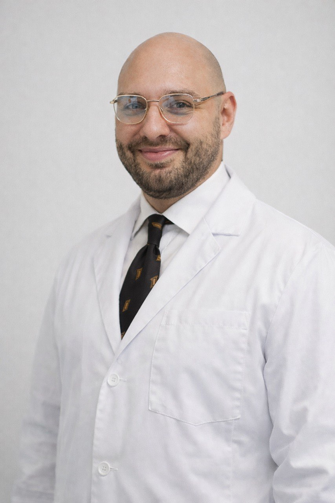

Малоинвазивное лечение варикозной болезни, грыж передней брюшной стенки и желчекаменной болезни. Без больших разрезов — быстрое восстановление.

О враче
Работаю в ЧУЗ «КБ «РЖД-Медицина» им. Н.А. Семашко» и веду научную деятельность на кафедре оперативной хирургии РУДН. Специализируюсь на малоинвазивном лечении варикозной болезни, грыж передней брюшной стенки и желчекаменной болезни. Также: колопроктология, сердечно-сосудистая хирургия, УЗИ-диагностика, хирургическая эндокринология.
На консультации разберём ваш случай без спешки. Объясню диагноз, расскажу о методах лечения и честно скажу, нужна ли операция.
Направления
Три основных направления — каждое с современными методами лечения.
Лечу варикоз без больших разрезов — методом радиочастотной абляции. Операция под местной анестезией, выписка на следующий день.
Паховые, пупочные, послеоперационные вентральные грыжи — в том числе гигантские. Лапароскопически, с сеткой, с минимальным травматизмом.
Лапароскопическое удаление желчного пузыря — 4 прокола, 40 минут, выписка на следующий день. Без большого разреза и длительной реабилитации.
Преимущества
Эндоскопические стойки 4К, ультразвуковые ножницы, аппараты РЧА. Современная хирургия требует современного оснащения.
Большинство операций провожу под местной анестезией — без общего наркоза и его последствий.
Выписка на следующий день, возврат к офисной работе через 1–2 дня. Никаких долгих больничных.
Веду каждого пациента сам — от консультации до контрольного осмотра. Отвечаю на вопросы лично.
Как это работает
От первого звонка до выздоровления — четыре понятных шага.
Осмотр, при необходимости УЗИ прямо на приёме. Разбираем ваш случай, ставим диагноз, обсуждаем варианты лечения.
Минимальный список анализов — сдать можно в любой лаборатории. Назначаем дату и время операции удобно для вас.
Местная анестезия, без наркоза. 35–60 минут в зависимости от вмешательства. Домой в тот же день или на следующий.
Контрольный осмотр через 1–2 недели. Всё это время отвечаю на вопросы лично — в Telegram или по телефону.
Отзывы
Рейтинг 5.0 из 5.0 на основе 155 подтверждённых отзывов на ПроДокторов.
«Замечательный врач, отзывчивый. Очень грамотный. Приятен в общении. Учтив. На все заданные мной вопросы отвечал сдержанно и понятно. Конечно, буду рекомендовать данного врача! И огромное спасибо за проведенную операцию!»
«Хирург Подольский М.Ю. знает свою работу на все 100. Очень внимателен, вежливый, операция прошла успешно, качественно и быстро. Через сутки выписали, дали рекомендации, всё чётко расписали, какие таблетки принимать, как обрабатывать. И пригласили через месяц на повторное УЗИ.»
«Понравилось отношение хирурга к пациенту! Лечащий хирург тщательно отнесся ко мне, было приятно проходить лечение! Буду рекомендовать данного врача своим близким и друзьям! Благодарю за Вашу компетентную работу!»
Как добраться
Запись на приём
Напишите в Telegram — отвечу на вопросы и договоримся о времени консультации.
Написать в Telegram